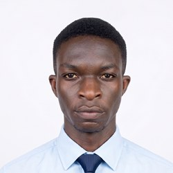

SIWES Industrial Training
Ile-Ife, Nigeria
- Maintaining and repairing computer hardware and software.
- Gaining commercial experience in buying and selling digital devices.
- Pursuing the Google IT Support Professional Certificate on Coursera.
Computer Science and Engineering, OAU
I repair and maintain computer hardware, and I study how physical limits shape the speed and scale of the systems built on top of it.
Open to internship opportunities. Based in Ile-Ife, Nigeria.

I am an undergraduate in computer engineering. Years of hands-on computer repair give me a practical view of hardware performance and machine constraints.
My academic interests are computer systems, networked architectures, and data infrastructure, especially how hardware limits affect efficiency and scalability in data-intensive environments.
Ile-Ife, Nigeria
Wisdom Tech Computer Engineering, Ile-Ife
Cowrywise Financial Technology Limited, Ile-Ife
GCI World, Online
Admitted into the competitive GCI World 2026 Data Science Cohort. Training in Python programming, data transformation, exploratory data analysis, and quantitative problem-solving.
Obafemi Awolowo University, Ile-Ife
CGPA: 3.59 / 5.00
Coursework: Computer Architecture, Operating Systems Concepts, Digital Systems Design, Data Structures and Algorithms, Systems Organization, Discrete Mathematics.
OPay Digital Services Limited, Online
Selected as an OPay Scholar with Team Treliant-OAU.
I am looking for internship opportunities. Reach me on any of these.
References are available on request. Interests outside work: cycling and exploring new places.